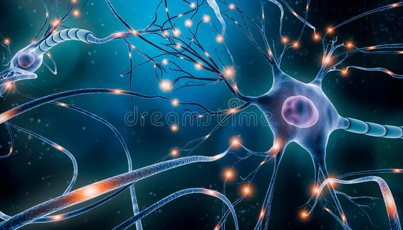

Neurology
What is a Neurology?
Neurology is the branch of medicine concerned with the study and treatment of disorders of the nervous system.
The nervous system is a complex, sophisticated system that regulates and coordinates body activities.
It has two major divisions:
- Central nervous system: the brain and spinal cord.
- Peripheral nervous system: all other neural elements, such as eyes, ears, skin, and other "sensory receptors".
A doctor who specializes in neurology is called a neurologist. The neurologist treats disorders that affect the brain, spinal cord, and nerves, such as:
- Cerebrovascular disease, such as stroke.
- Demyelinating diseases of the central nervous system, such as multiple sclerosis.
- Central nervous system: the brain and spinal cord.
- Headache disorders.
- Central nervous system: the brain and spinal cord.
- Infections of the brain and peripheral nervous system.
- Central nervous system: the brain and spinal cord.
- Peripheral nervous system: all other neural elements, such as eyes, ears, skin, and other "sensory receptors".
- Movement disorders, such as Parkinson's disease.
- Neurodegenerative disorders, such as Alzheimer's disease, Parkinson's disease, and Amyotrophic Lateral Sclerosis (Lou Gehrig's disease).
- Seizure disorders, such as epilepsy.
- Spinal cord disorders.
- Speech and language disorders.
Neurologists do not perform surgery. If one of their patients requires surgery, they refer them to a neurosurgeon.

How do neurologists diagnose conditions?
An interventional cardiologist may carry out procedures such as angioplasties, stenting, valvuloplasties, congenital heart defect corrections, and coronary thrombectomies.
Your neurologist will ask about your medical history, family history, medication history and any current symptoms. They’ll also conduct a neurologic examination, including tests of your:
- Coordination, balance, reflexes and gait.
- Muscle strength.
- Mental health.
- Vision, hearing and speech.
- Sensation.
Typical neurological procedures:
Since different disorders can have similar symptoms, your neurologist may need more testing to make a diagnosis.
Neurologists may recommend a variety of procedures to help diagnose or treat a condition.These procedures may include:
Lumbar puncture
Your neurologist may use a lumbar puncture to test your spinal fluid. They may
recommend the procedure if they believe your symptoms are caused by a problem in your nervous system that can be
detected in your spinal fluid.
The procedure involves inserting a needle into the spine after numbing it and taking a sample of spinal fluid.
Tensilon test
This procedure can help your neurologist diagnose myasthenia gravis. In this
test, your doctor injects you with a medicine called Tensilon. Then they observe how it affects your muscle
movements.
Electromyography (EMG):
An EMG measures electrical activity between your brain or spinal cord
to a peripheral nerve. This nerve is found in your arms and legs, and is responsible for muscle control during
times of movement and rest.
EMGs can help your neurologist diagnose spinal cord disease as well as general muscle or nerve dysfunction.
During this test, your neurologist-technician inserts small electrodes into your muscles to help measure activity during periods of movement and rest. Such activity is recorded by a machine attached to the electrodes with a series of wires, which may be somewhat uncomfortable.
Oftentimes, a neurologist will order a nerve conduction velocity (NCV) study in conjunction with an EMG. While an EMG measures muscle activity, an NCV assesses the ability of your nerves to send the necessary signals that control these muscles. If your neurologist recommends both tests, you’ll likely do the EMG first.
In all, the average EMG/NCV combination test may take about an hour or longerTrusted Source to complete. You’ll want to avoid any stimulants, such as caffeine and nicotine, several hours before your test, or else these substances may alter your results..
Electroencephalogram (EEG):
Cardiac electrophysiology is a subspecialty of cardiology.
The physician looks at how electric currents inside the heart muscle tissue work, how the current spreads, and what the pattern of the currents mean.

Electrophysiology study (EPS) of the heart: in this test, a catheter is threaded into a vein at the top of the leg. Guided under fluoroscopy, it makes its way to the heart. The catheter measures the electrical signals within the heart.
Do I need a referral to see a cardiologist?
It depends. Some insurance plans may require you to get a referral from your primary care provider, so be sure to check with your insurance company for details. This can help you avoid the unwelcome surprise of a higher cost than you expected when visiting a cardiologist. It’s usually more expensive to see a specialist like a cardiologist than your primary care provider, but following your insurance company’s rules saves you money.
What are some different types of cardiologists?
Cardiology is a vast medical branch that offers many subspecialties. The American Board of Internal Medicine (ABIM) offers certification in four of these areas:
Advanced heart failure and transplant cardiology:Physicians who practice this cardiovascular subspecialty manage advanced heart failure cases and transplant patients. These cardiologists implement electrophysiologic and hemodynamic support devices and perform surgical procedures. They sometimes act as consultants for other physicians managing patients with significant heart failure. Obtaining certification in this field requires an additional year of training following a cardiovascular disease fellowship.
Adult congenital heart disease: Physicians who focus on adult congenital heart disease work with patients who have one or more defects in their heart or blood vessel structures. They often need to coordinate with numerous other providers to provide long-term care. Becoming certified in this subspecialty entails completing two years of additional fellowship training upon completing a cardiovascular disease fellowship.
A note from Cleveland Clinic:
A neurologist is a medical doctor who specializes in diseases and conditions affecting your brain, spinal cord and nerves. Your neurologist will examine you, order tests, make a diagnosis, treat your condition with medication or physical therapy or refer you to and work together with other specialists, such as a neurosurgeon or neuro-oncologist, if appropriate. Come prepared with your notes, share your health information and never hesitate to ask questions. Your neurologist is here to help diagnose your condition, treat or manage it as best as possible and support you along the way.